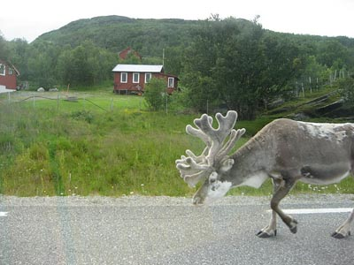

Sobi

Sob polární (Rangifer tarandus) (synonyma sob arktický) nebo v Severní Americe karibu (synonyma jelen karibu) je severský přežvýkavec z čeledi jelenovitých. Jde o jediný zdomácnělý druh této čeledi.
Sob je geologicky starý druh, který má mezi jelenovitými izolované postavení, nejblíže je příbuzný severoamerickým jelencům rodu Odocoileus. V současné podobě se objevil přibližně před 200.000 lety a nejméně před 120. 000 lety se začaly formovat jednotlivé poddurhy. Tehdy, v pleistocénu, bylo jeho rozšíření mnohem větší než v současnosti a zahrnovalo téměř celou Evropu.. na konci poslední doby ledové, před cca 25.000-10.000 lety se sobi pásli ve společnosti mamutů i na našem území.
Zpět